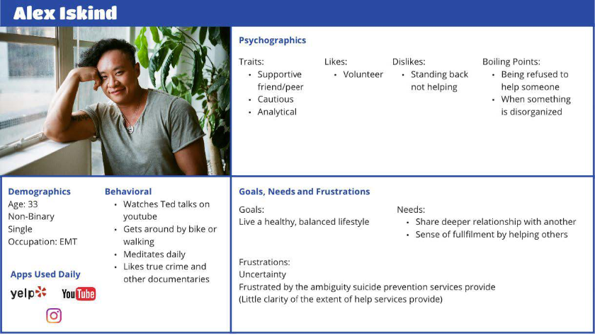
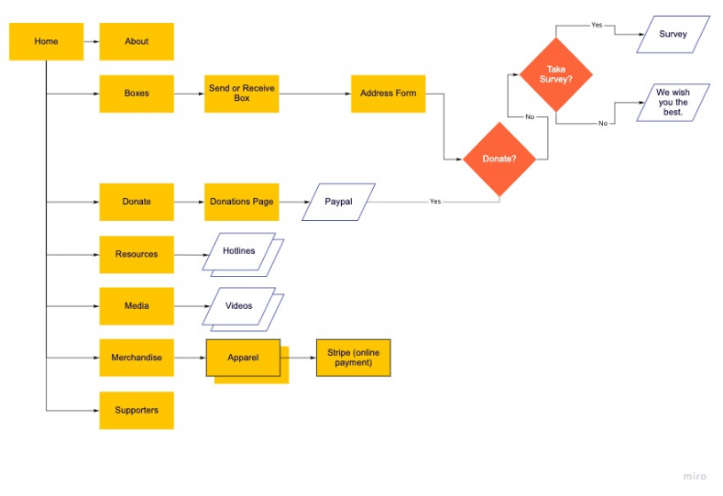

UX/UI Design Projects
Graphic Design Projects
About
Contact

back
Find Your Anchor
Redesign Website For Gaining Retention
The Challenge
Find Your Anchor is a nonprofit organization aimed to help individuals impacted by suicide. The Find Your Anchor website currently does not display their box as the main focus within their content. With a website redesign, we can bring attention to the anchor box and expand its reach to individuals in need.
The Goal
This project is aiming to redesign the website for find your anchor. We hope to integrate the organization’s vision and mission into its website design so that it is immediately clear to users. We will make the site more easily navigable so that users can send and receive boxes.
My Role on a Team of 3
UX Designer on a team of 3 was to perform research using competitive analysis, compose a story board, attempt to contact the stakeholder to better understand pain points they are seeing and learn about their goals to create card sorting. The cards were attained from 25 people in a survey and 2 phone interviews. Using the information collected I was able to scope the project to fit within the time constraints. Creating wireframes for user testing Find Your Anchor.
Find Your Anchor is a nonprofit organization aimed to help individuals impacted by suicide. The Find Your Anchor website currently does not display their box as the main focus within their content. With a website redesign, we can bring attention to the anchor box and expand its reach to individuals in need.
The Goal
This project is aiming to redesign the website for find your anchor. We hope to integrate the organization’s vision and mission into its website design so that it is immediately clear to users. We will make the site more easily navigable so that users can send and receive boxes.
My Role on a Team of 3
UX Designer on a team of 3 was to perform research using competitive analysis, compose a story board, attempt to contact the stakeholder to better understand pain points they are seeing and learn about their goals to create card sorting. The cards were attained from 25 people in a survey and 2 phone interviews. Using the information collected I was able to scope the project to fit within the time constraints. Creating wireframes for user testing Find Your Anchor.
The Steps Taken

1. Research
Research method:
1. We did a Competitive Analysis to gain insight on direct and indirect organizations. We were curious to know how they would gain the attention of users to donate and if their purpose was stated on the homepage to get the user to accomplish during the visit on the website.
2. My team came up with 10 questions each. After compiling and combing through which questions would get the answers that we needed to reconstruct or add features for Find Your Anchor’s purpose, my teammate, Phil, set-up a quantitative survey where 25 people gave us results.
3. My team approached the topic of suicide prevention with care. Our questions supported what someone looking to help another out and were curious as to what one looks for if finding help resources for themselves. We wanted to know what they expect to see or find.
4. We were unsuccessful at receiving a reply from the Stakeholder as we reached out through email and Instagram. We had to decide what was missing aside from the competitors and how we could tell the user who Find Your Anchor is upon arrival on the homepage because important information was tucked within various pages or under the fold of the homepage having a user fish for important information in over 5 seconds.
Research method:
1. We did a Competitive Analysis to gain insight on direct and indirect organizations. We were curious to know how they would gain the attention of users to donate and if their purpose was stated on the homepage to get the user to accomplish during the visit on the website.
2. My team came up with 10 questions each. After compiling and combing through which questions would get the answers that we needed to reconstruct or add features for Find Your Anchor’s purpose, my teammate, Phil, set-up a quantitative survey where 25 people gave us results.
3. My team approached the topic of suicide prevention with care. Our questions supported what someone looking to help another out and were curious as to what one looks for if finding help resources for themselves. We wanted to know what they expect to see or find.
4. We were unsuccessful at receiving a reply from the Stakeholder as we reached out through email and Instagram. We had to decide what was missing aside from the competitors and how we could tell the user who Find Your Anchor is upon arrival on the homepage because important information was tucked within various pages or under the fold of the homepage having a user fish for important information in over 5 seconds.

2. Definition
Creating A Proto Persona & The Story
We created a proto persona who was looking to help someone. We thought maybe this person would look at testimonials first before proceeding to get a box. After receving feedback, we had to rethink our proto persona into someone who wanted the information laid out for them on the spot without having to read through to be convinced.
We grouped users’ answers and survey answers onto sticky notes. We grouped them by similar responses and named each group to see where priorities were for the website for our user. We then reconstructed the categories for the main pages on the website.
Creating A Proto Persona & The Story
We created a proto persona who was looking to help someone. We thought maybe this person would look at testimonials first before proceeding to get a box. After receving feedback, we had to rethink our proto persona into someone who wanted the information laid out for them on the spot without having to read through to be convinced.
We grouped users’ answers and survey answers onto sticky notes. We grouped them by similar responses and named each group to see where priorities were for the website for our user. We then reconstructed the categories for the main pages on the website.
3. Ideation
Combining Our User And Interview Results
From sorting out the survey and interview responses, we were able to see that the user liked to help others by being able to send something to the person or getting the resources to send to them. Users wished that there was a way to share or reach out on a website to get something quick. Though we wanted to feature the box, we wondered if adding a chat or social media links would solve the pains of the user aside from the knowledge of the box.
Combining Our User And Interview Results
From sorting out the survey and interview responses, we were able to see that the user liked to help others by being able to send something to the person or getting the resources to send to them. Users wished that there was a way to share or reach out on a website to get something quick. Though we wanted to feature the box, we wondered if adding a chat or social media links would solve the pains of the user aside from the knowledge of the box.

4. Prototype
My team wanted to validate the vision we had in reorganizing information the original user flow had. My role was to generate sketches for desktop. At the beginning of my design process, I created the low fidelity pencil on paper sketches which provide a way to show concepts for app functionality and preliminary design elements.
I discussed with my team as we shared our sketches for mobile to compare. We talked out what is working and what could be better for the next stage in compiling our sketches for mid-fidelity. Figma was used to produce one mid and high fidelity for mobile and desktop for user testing. The challenge was deciding whether to keep the forms for getting or receiving a box and donating on a pop-up or on a one page. We knew eliminating the 19 questions survey for the user to go through before being asked what the user would like to do would be a good idea in order to retain the user on the find your anchor website to complete the tasks. To not eliminate the survey in total, we added it after the user submits the form and keeping it as an option.
My team wanted to validate the vision we had in reorganizing information the original user flow had. My role was to generate sketches for desktop. At the beginning of my design process, I created the low fidelity pencil on paper sketches which provide a way to show concepts for app functionality and preliminary design elements.
I discussed with my team as we shared our sketches for mobile to compare. We talked out what is working and what could be better for the next stage in compiling our sketches for mid-fidelity. Figma was used to produce one mid and high fidelity for mobile and desktop for user testing. The challenge was deciding whether to keep the forms for getting or receiving a box and donating on a pop-up or on a one page. We knew eliminating the 19 questions survey for the user to go through before being asked what the user would like to do would be a good idea in order to retain the user on the find your anchor website to complete the tasks. To not eliminate the survey in total, we added it after the user submits the form and keeping it as an option.
5. Testing
Guerilla testing: 3 users were successful in knowing where to go to send or receive a box and donating. We were able to keep them on the page as they read through why you wouldn’t have to donate if the box is for yourself vs why you have the opportunity to donate if you’re attaining the box for someone else.
From reading their behavioral reaction to the prototype for web and mobile, we saw that they were engaged with the homepage and became aware of what this organization is about. Though narrating their actions to us, the user would show a reaction of scanning through the entire page looking for an image or some context of what each section on a form was for before proceeding. We noticed that on the homepage, the chat button needed to standout more, but when found, the user liked that you could reach out to ask questions for a site providing resources for a health issue rather than search for the answer throughout the website.
While we assumed that staying with a palette of blue and white throughout the website would be easy on the eyes for the user in making them feel calm, we learned that adding an opposite color from the color wheel would be a great addition to making the chat or hover over the navigation pull more visual interest to the user.
Guerilla testing: 3 users were successful in knowing where to go to send or receive a box and donating. We were able to keep them on the page as they read through why you wouldn’t have to donate if the box is for yourself vs why you have the opportunity to donate if you’re attaining the box for someone else.
From reading their behavioral reaction to the prototype for web and mobile, we saw that they were engaged with the homepage and became aware of what this organization is about. Though narrating their actions to us, the user would show a reaction of scanning through the entire page looking for an image or some context of what each section on a form was for before proceeding. We noticed that on the homepage, the chat button needed to standout more, but when found, the user liked that you could reach out to ask questions for a site providing resources for a health issue rather than search for the answer throughout the website.
While we assumed that staying with a palette of blue and white throughout the website would be easy on the eyes for the user in making them feel calm, we learned that adding an opposite color from the color wheel would be a great addition to making the chat or hover over the navigation pull more visual interest to the user.


6. The Final Product & Conclusion
After Our 4 Weeks Of Research, Reformatting And Testing, We Were Successful In Getting Users To Remain On The Website To Complete The Box Or Donate Process By Keeping The Forms Within An Internal Page Without Multiple Click Throughs. We Learned That People Will Drop Out If Asked To Do Too Many Tasks Or Get Confused When The Website Would Lead To An External Site Or Pop-Up.
After Our 4 Weeks Of Research, Reformatting And Testing, We Were Successful In Getting Users To Remain On The Website To Complete The Box Or Donate Process By Keeping The Forms Within An Internal Page Without Multiple Click Throughs. We Learned That People Will Drop Out If Asked To Do Too Many Tasks Or Get Confused When The Website Would Lead To An External Site Or Pop-Up.
LET’S CONNECT
carmel@carmeldunn.com


Though I work worldwide, I am located in San Diego, CA, USA.